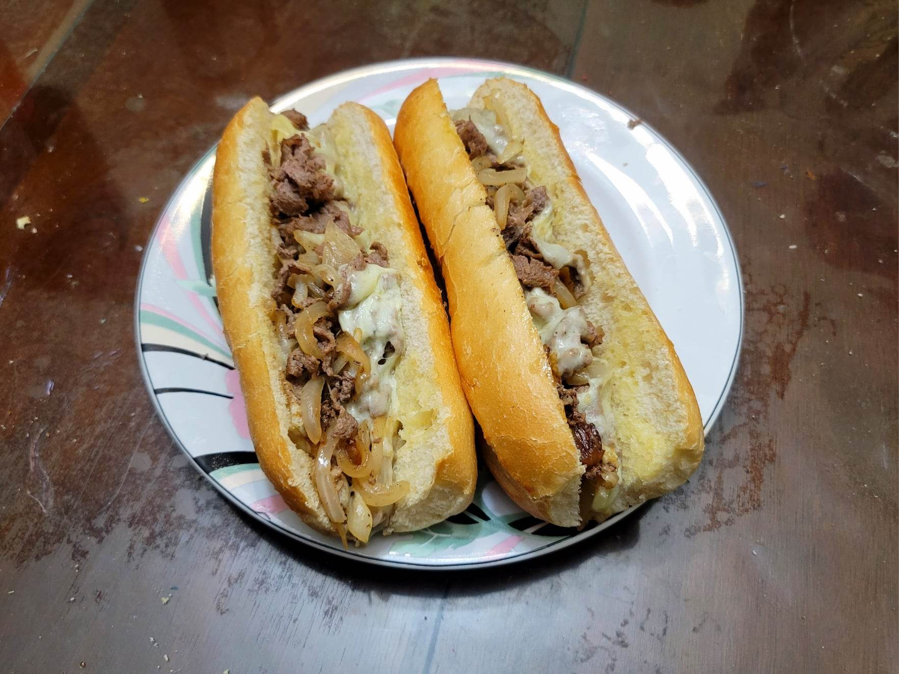

Philly Cheesesteak

Ingredients:
- 1 lb Ribeye steak, sliced very thinly
- 1 tsp Black pepper
- 1 tsp Salt
- 1 large Onion, sliced
- 7-8 slices Provolone cheese
- 4 Hoagie rolls
- 2 1/2 tbsp Butter
Instructions:
- In a pan or on a griddle, heat 1 tbsp butter over medium/medium-low. Add the onion and cook slowly until translucent, stirring as needed.
- Set aside the onion. Melt another tbsp butter and then add the beef, salt, and pepper. Cook for 2-4 minutes, stirring occasionally.
- Add the onions and combine with the steak. Place the cheese over the steak and let melt, 1-2 minutes.
- Butter the insides of the hoagies with the remaining butter. Toast on the griddle or in the oven for about 5 minutes or to preference. Fill the hoagies with the steak and cheese and serve immediately.